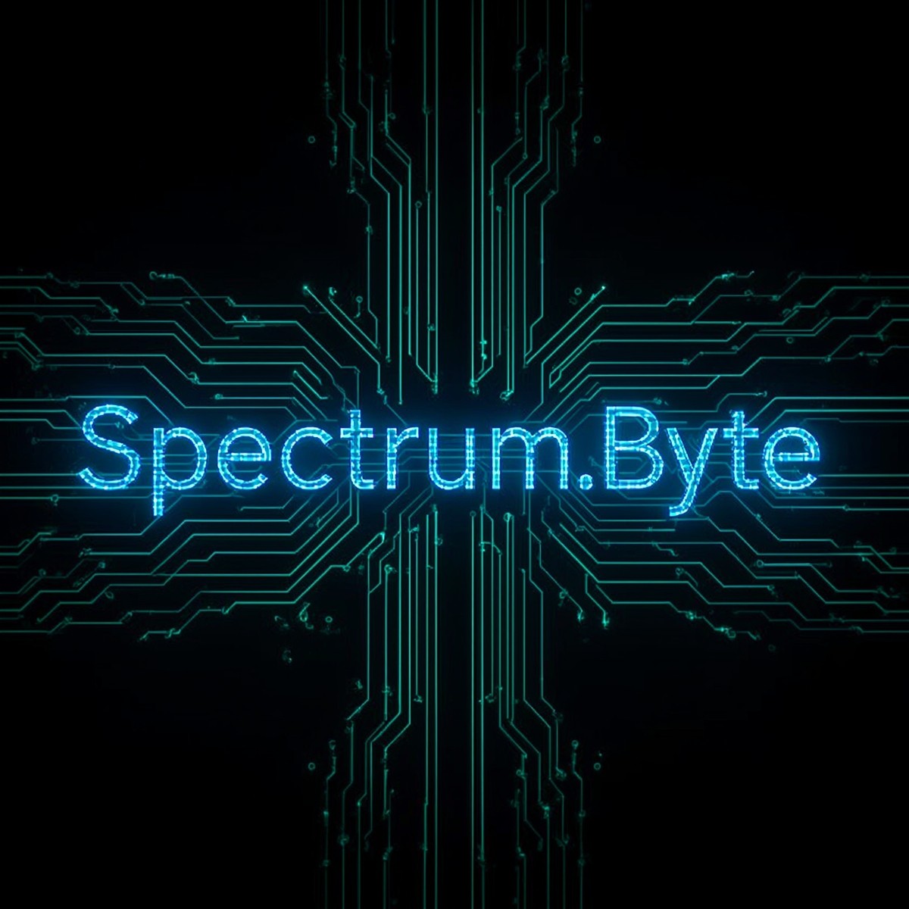

Login ke Forum
LOGIN WITH GOOGLE

Home
Kritik
Hardware & Software
AI
Web3
Teknologi
ID
ENG
Spectrum.Ai
Forum Kritik & Saran
Bagi kami setiap masukan sangat berharga!
Tambahkan Topik Baru
Buat Topik
Beri Penilaian (Opsional):
★
★
★
★
★
Kirim
Konfirmasi Hapus
Apakah Anda yakin ingin menghapus komentar ini?
Batal
Hapus